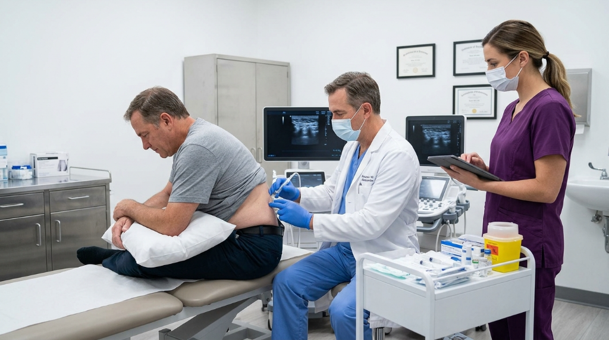

Four science-backed, non-surgical regenerative therapies — each precisely matched to your condition, anatomy, and healing goals by Dr. Davenport.
At Orion Pain, no two treatment plans are alike. Dr. Davenport conducts a thorough evaluation — including imaging review, physical examination, and detailed health history — before recommending any protocol. The right therapy for the right patient at the right time.
Harness your body's own healing power.
Platelet-Rich Plasma (PRP) therapy uses concentrated growth factors from your own blood to accelerate healing in damaged joints, tendons, and soft tissue. It's a natural, drug-free solution backed by decades of clinical research and used in orthopedic, sports medicine, and regenerative practices worldwide.
Because PRP is derived from your own blood, the risk of allergic reaction or rejection is virtually zero. It has been used safely for decades and is FDA-cleared for musculoskeletal conditions.
A small amount of your blood is drawn — similar to a standard lab test.
The blood is spun in a centrifuge to isolate and concentrate your platelet-rich plasma — up to 10× the baseline platelet concentration.
The concentrated PRP is precisely injected into the affected area under real-time ultrasound guidance, triggering your body's natural regenerative cascade.


Regenerate. Rebuild. Recover.
Mesenchymal stem cell (MSC) therapy harnesses the regenerative potential of your body's own stem cells to repair damaged tissue, reduce inflammation, and restore function — without surgery or prolonged downtime. Stem cells are the body's most powerful repair tool, and we've learned to direct that power precisely.
This therapy is particularly effective for patients with significant cartilage damage, severe osteoarthritis, or chronic conditions that haven't responded adequately to other treatments.
Stem cells are carefully collected from your own bone marrow (hip) or adipose (fat) tissue under local anesthesia.
The harvested cells are concentrated using advanced processing techniques to maximize their therapeutic potency.
Stem cells are delivered under ultrasound guidance directly to the damaged area, where they signal tissue regeneration and anti-inflammatory cascades.
Strengthen from the inside out.
Prolotherapy uses a precise dextrose solution to stimulate the body's natural healing response in weakened or damaged ligaments, tendons, and joints. It rebuilds structural integrity without surgery — and has been practiced safely for over 60 years.
Unlike cortisone, which suppresses inflammation temporarily and can degrade tissue over time, prolotherapy uses the inflammatory response as the trigger for true structural repair. It's a fundamentally different — and more durable — approach.
Dr. Davenport identifies the specific lax or damaged ligaments and tendons contributing to your pain using physical exam and ultrasound imaging.
A concentrated dextrose solution is injected into the damaged connective tissue, creating a controlled, localized inflammatory response that initiates repair.
Over a series of sessions, tissue gradually thickens, strengthens, and stabilizes — addressing the structural cause of your pain at its root.
Optimize healing at the cellular level.
Therapeutic peptides are short chains of amino acids that act as biological signals — telling your body to accelerate healing, reduce inflammation, and restore cellular function. They work with your biology, not against it, and represent one of the most exciting frontiers in regenerative medicine today.
Specific peptides like BPC-157 and TB-500 have been shown to dramatically accelerate tissue repair, reduce systemic inflammation, and support gut and joint healing simultaneously — making them a powerful complement to other regenerative therapies or a standalone protocol.
Dr. Davenport evaluates your inflammation levels, healing capacity, and treatment history to select the optimal peptide protocol.
Peptides are administered via targeted injection or subcutaneous delivery, activating specific cellular repair and anti-inflammatory pathways.
Over 4–8 weeks, peptides work systemically — reducing inflammation, accelerating tissue repair, and often improving energy and recovery throughout the body.
The most revolutionary biologics in regenerative medicine today.
These are the most potent regenerative biologics now available — sourced from ethically donated umbilical cord tissue and engineered exosome concentrates. They contain a full spectrum of the body's most powerful healing compounds: growth factors, hyaluronic acid, cytokines, exosomes, and stem cells that are potent, active, and viable from the moment of injection.
Unlike autologous therapies (which rely on your own cells), these allografts come from young, healthy donors — meaning the biological material has never been exposed to aging, inflammation, or chronic disease. The result is a far more concentrated regenerative signal delivered directly to your damaged tissue.
Wharton's Jelly-derived mesenchymal stem cells from umbilical cord tissue are among the youngest and most proliferative cells available. They carry virtually no HLA markers — making immune rejection exceptionally rare — and deliver a dense payload of regenerative growth factors, extracellular matrix proteins, and anti-inflammatory cytokines directly to the injury site.
Exosomes are nanoscale vesicles secreted by stem cells — the primary communication channel through which cells coordinate healing. A single dose contains billions of exosomes, each loaded with growth factors, mRNA, and anti-inflammatory cytokines. Because they contain no cells, they bypass immune detection entirely and penetrate tissue at a depth no other biologic can match.
Dr. Davenport reviews imaging, symptom history, and prior treatments to confirm you are an appropriate candidate for biologic therapy.
The umbilical cord tissue or exosome concentrate is prepared at point of care — no harvesting from the patient required. The material arrives pre-processed from an accredited tissue bank.
The biologic is injected under real-time ultrasound guidance with pinpoint accuracy — placing the regenerative payload exactly where tissue damage exists.
Over the past several years, umbilical cord stem cell therapy has become extremely popular. There are several biological components that combine to make up regenerative therapy with these "products of conception." Here is what you need to know.
Regenerative therapy draws on five distinct biological elements, each contributing unique healing properties:
The cord itself contains Wharton's Jelly — a gelatinous substance rich in mesenchymal stem cells (MSCs) that are young, potent, and carry virtually no immune markers.
Rich in hematopoietic stem cells and growth factors that support tissue regeneration and immune modulation.
The primary source of MSCs in umbilical cord-derived biologics — highly proliferative, anti-inflammatory, and capable of differentiating into multiple tissue types.
Contains growth factors, collagen, and anti-inflammatory proteins that accelerate tissue repair and reduce scar formation.
Packed with hyaluronic acid, cytokines, and growth factors — particularly effective for joint lubrication and cartilage support.
It should be clearly stated: none of these products contain embryonic stem cells or involve aborted fetuses. That would be both unethical and illegal.
All biologics used at Orion Pain are obtained from consenting donors following healthy, full-term births, then processed at FDA-registered, cGMP-certified labs under the strictest quality standards.
In the same way the umbilical cord, placenta, and amniotic fluid protect and nourish a growing baby, these same biological compounds have been shown to be instrumental in repairing and regenerating damaged tissues in the adult body.
The outcomes achieved with umbilical cord materials have been nothing short of remarkable — particularly for patients who have exhausted conventional options like cortisone, surgery consultations, and physical therapy.
Dr. Davenport will evaluate your unique condition and recommend the most effective protocol during a free, no-obligation consultation.
No surgery · No drugs · No obligation